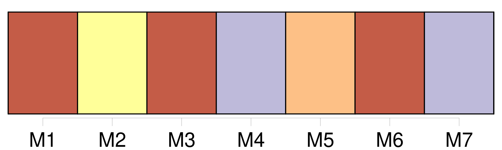

Longueur nb maillons : 148 mentions |
  |
Je revis [mon frère] , [le doux Firmin] , pâle et comme pétrifié, tendant vers eux [ses] mains frêles. [30 phrases] Pas davantage [Firmin] [qui] ne savait que jouer. [16 phrases]
Dès [sa] première visite [Firmin tout joyeux] s'était attardé auprès de mon lit, pour me dire : [Firmin] était certainement [celui de nous] [qui] avait le plus souffert de la désunion de nos parents. [Il] les aimait l'un et l'autre d'un amour infini, et leurs disputes [l'] avaient souvent affecté au point de [le] rendre malade.
Que de fois, le soir, tout grelottant de fièvre dans [son] lit, je [l'] avais vu se torturer l'esprit pour essayer de découvrir le motif de la désunion avec l'espoir d'y apporter remède. [6 phrases] Mais [Firmin] et moi n'avions nulle envie de dormir. [7 phrases]
» Et je revoyais le mince visage de [mon frère] , tout épanoui de joie et de confiance en l'avenir. [Firmin] n'avait qu'un an de moins que moi, mais [il] était si petit et si faible qu'on [l'] eût dit beaucoup plus jeune.
Nous nous aimions profondément, et pour mon compte, j'aurais pu jurer que, de toute ma famille, c'était [lui] [qui] m'était le plus cher. [1 phrases] [Firmin] m'apprenait le soir ce qu'on [lui] avait enseigné pendant le jour, à l'école. Je retenais les leçons plus facilement que [lui] , et il m'arrivait d'être à mon tour [son] professeur. Je [lui] faisais surtout réciter [ses] fables qu' [il] ne parvenait pas à retenir malgré toute [sa] bonne volonté. Il [lui] fallait plus d'une semaine pour en apprendre une. [1 phrases]
Cela ne [l'] empêchait pas d'être persuadé qu' [il] la savait dès sa première lecture.
Notre père s'en mêlait, parfois :
— [Je] la sais, papa. [3 phrases] Tout le monde faisait silence, et [Firmin] prenait de l'espace.
[Il] se dandinait, sûr de [lui] , et [lançait] d'une voix beaucoup plus haute qu'il n'était nécessaire : Et [Firmin] s'arrêtait net.
[Il] gardait la bouche ouverte comme pour laisser passer la suite, mais la suite ne venait pas. — Elle est là, disait [-il] , en montrant le bout de [sa] langue.
Puis [il] rougissait, [s'impatientait] et [frappait] du pied : [1 phrases] Notre père riait et renvoyait [Firmin] apprendre [sa] fable. [3 phrases] — Qu'as [-tu] fait??
[lui] demandais -je en [le] voyant rentrer en retard et tout penaud.
Et [lui] , près de pleurer, répondait une fois de plus : [4 phrases]
Et quand il nous arrivait, à [Firmin] et à moi de jouer avec les jumeaux et de les faire rire jusqu'à les rendre malades, elle se tenait à l'écart, sans rire ni se fâcher. [1 phrases] C'était au cours d'une rougeole qui nous obligeait, [Firmin] et moi, de garder la chambre. [2 phrases] Pour nous distraire, notre père nous apporta des romans d'aventures, et bientôt [Firmin] ne parla plus que par Brahmane et Vichnou. Je devins vite la belle Sita dont [il] était le respectueux serviteur. Coiffé d'un énorme turban fait d'une serviette éponge, [il] venait à tout instant prendre mes ordres. [Il] se tenait devant moi, les jambes ridiculement arquées, et les bras si drôlement appuyés sur la tête que j'éclatais de rire à chaque fois. [4 phrases] La première surprise passée, [le serviteur hindou] s'était brusquement changé en chien de garde, aboyant furieusement contre l'intruse, et l'obligeant à fuir.
Puis la porte refermée, [le chien] avait aboyé avec la même fureur, par le trou de la serrure, autour de nos lits, contre la fenêtre, et même vers le plafond comme pour faire peur autant qu'à Angèle, aux maladies, aux péchés, et à tous les châtiments dont nous étions menacés. [1 phrases]
Je me revoyais déjà de retour à la maison où je retrouvais la gaieté si amusante de [mon frère] , les caresses des deux petits, et enfin toute la tendresse de mes parents avec leur bon accord revenu. [108 phrases] C'est encore la lecture si intéressante des lettres de [Firmin] me tenant au courant de ce qui se passe chez nous, et des faits amusants qui arrivent journellement à l'école. [15 phrases] Une lettre de [Firmin] arrivée peu après, m'enleva une partie de ma peine en me faisant rire.
[Il] disait : Tout de même, de penser que tu pleures là-bas toute seule, ça [me] donne envie de pleurer aussi ; alors, pour n'y plus penser, [je] t'écris. [1 phrases] « [J'] ai d'abord à te dire que papa et maman sont toujours bien sages. [2 phrases]
Maman [m'] a bien défendu de t'en parler, aussi, [je] le fais en cachette. « [J'] ai aussi à te dire que les jumeaux font bien enrager la nouvelle femme de ménage. [Moi] [je] trouve que c'est bien fait, parce qu'à midi elle nous donne à manger des choses qu'on n'aime pas. [1 phrases] Oui, [je] t'en fiche!! [7 phrases] [Je] ne sais pas où elle les prend ces petites tablettes, [je] n'en ai jamais vu de pareilles chez les marchands. [1 phrases] Aussi, Angèle qui a toujours faim de chocolat, [m'] a promis de se plaindre à maman.
[Moi] [je] n'oserais pas, tu le sais bien. « [Je] vais encore te confier un secret. [1 phrases]
[Je] récite la prière avec elle tous les soirs pour que ça réussisse. « À bientôt [ma] grande sœur, « [Ton Firmin] [5 phrases]
Il me semble qu'en me privant de [Firmin] et des petits pendant les vacances on m'a privée d'une chose nécessaire à la vie, et que je ne tarderai pas à en mourir. [76 phrases] Auprès de [Firmin] , je m'attardais comme auprès d'un divertissement à cause de la variété de [ses] jeux qu' [il] menait, la plupart du temps, comme des faits réels. [Il] imitait avec une perfection déconcertante les bruits confus de la ville et l'affairement d'une multitude de gens dans une circulation difficile.
Dans ces moments -là les jumeaux restaient tranquilles pour [l'] écouter, et nos parents eux -mêmes prenaient plaisir à [le] voir et à [l'] entendre. Un soir, assis à califourchon sur une chaise qu' [il] malmenait à en briser les quatre pieds, [il] se lançait à bicyclette, disait [-il] , à travers la cohue des voitures et des piétons, sonnant du grelot, faisant jouer [sa] trompe, et se fâchant après les maladroits qui traversaient trop court devant [son] guidon. Et tout à coup, arrivant à une rue barrée où se tenait un agent de police, [il] s'était immobilisé sur [sa] chaise en me regardant et rougissant de tout le visage. Inquiète, j'avais demandé : « [Tu] t'es fait mal??
» Et [lui] , véritablement troublé, avait répondu : « [Je] n'ai pas de plaque à [ma] bicyclette, et [j'] ai peur que l'agent [me] demande [mes] papiers ». [21 phrases] Elle parlait des examens scolaires d'Angèle et de [Firmin] [15 phrases] Au lieu de l'appel de ma mère ce fut une lettre de [Firmin] qui arriva.
[Il] disait : [Je] savais pourtant beaucoup de choses la veille, mais au bon moment [j'] avais oublié tout. [1 phrases]
[Moi] , [je] suis sûr que l'examen des filles est bien moins difficile que celui des garçons. [1 phrases] « Maintenant, prépare -toi à une grande nouvelle, si grande, [ma] grande sœur, que tu ne pourras pas y croire en une seule fois.
La voici : [12 phrases]
Et brusquement Angèle et [Firmin] qui venaient les derniers se retournèrent et crièrent mon nom. [5 phrases]
[Firmin] [qui] n'avait pas grandi et se haussait pour m'embrasser s'excusa ainsi de ne pas m'avoir reconnue du premier coup : [2 phrases] Comme [Firmin] et Angèle m'entraînaient sur la route, mes parents s'arrêtèrent pour me regarder marcher. [5 phrases] Après leur départ, je cessai bientôt d'écouter ce que me disaient Angèle et [Firmin] [17 phrases] En m'attendant, Angèle et [Firmin] s'étaient endormis sur leur chaise. [5 phrases]
D'accord avec oncle meunier, je décidai de laisser Angèle et [Firmin] dans l'ignorance de ces choses. [26 phrases] Et surtout, j'avais [Firmin]
[Sa] gaîté, [son] insouciance, éloignaient toute idée de fatigue ou de tristesse. La moisson était pour [lui] un jeu très amusant.
Avec une faux, faite d'un bâton ou d'une plaque de tôle, [il] fauchait les cailloux et les mottes de terre de la cour, entraînant derrière [lui] Clémence et Nicole et leur disant fièrement : Actif ou au repos, [il] n'était jamais à court d'imagination pour nous distraire.
[Lui] [qui] ne pouvait retenir deux lignes entières de [ses] leçons, débitait sans se tromper ni s'embrouiller jamais, les histoires les plus compliquées de [son] invention. Aujourd'hui parce que c'est dimanche et que nous sommes à nous reposer au bord de la rivière, [il] retient l'attention de Nicole et Nicolas en lançant au fil de l'eau de tout petits bouts de bois, qui grandiront en cours de route, dit [-il] , et deviendront des navires magnifiques auxquels [il] donne déjà des noms.
Et soudain, au moment où on s'y attendait le moins, [le] voilà debout, tout en gestes et nous disant : [1 phrases] Puis, [je] ferai bâtir un vieux château sur la mer, et nous passerons l'été à nous baigner et à jouer à cache-cache dans les oubliettes. [3 phrases]
Mais [Firmin] la rassure :
Et, la voix nette et forte, [il] commande :
Et, tourné vers l'aval de la rivière, la main en abat-jour pour mieux voir Gaston filer en pleine mer, [il] nous renseigne : |

|
La ressource peut être téléchargée sur la page Ortolang
Si vous avez des questions ou vous voyez des erreurs, merci d'envoyer un mail à silvia.federzoni89@gmail.com
Site développé par S. Federzoni (contact)